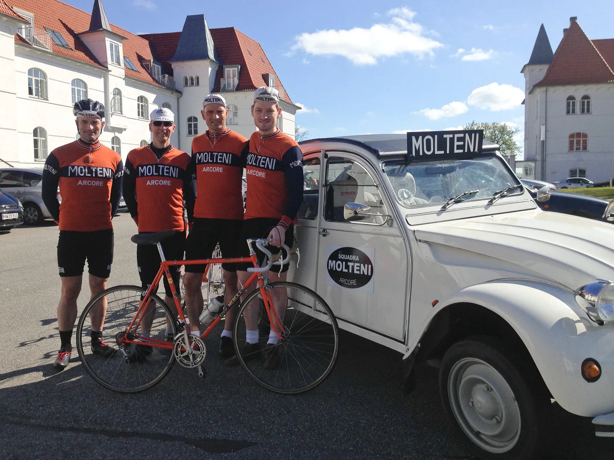
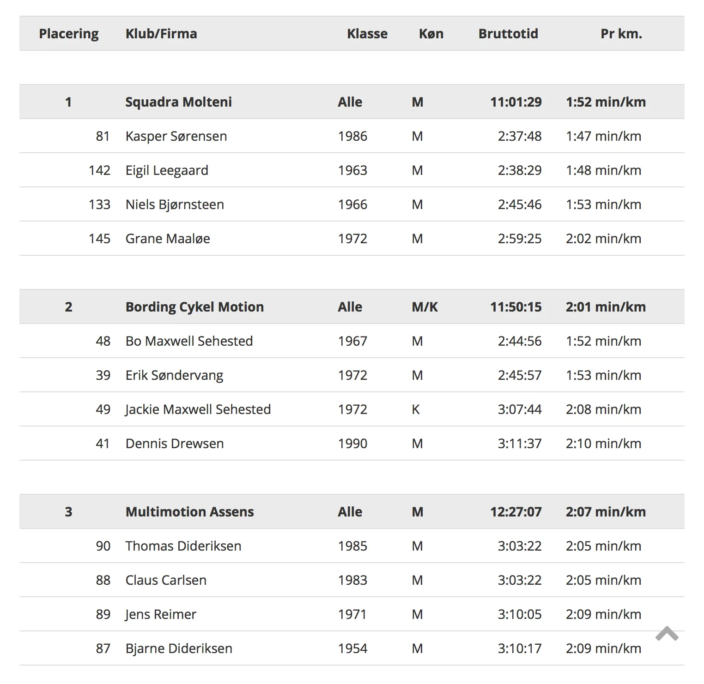

Sejr ved Brejning Bakkeløb 2016

Squadra Molteni sikrede sig i dag sæsonens første sejr, da de vandt holdkonkurrencen på 88 km. ruten ved Brejning Bakkeløb 2016.
Efter et drivvådt Nordfyn Rundt i går, var det stadig med sand og grus piblende ud af alle kropsåbninger, at Squadra Molteni stod til start ved Brejning Bakkeløb i strålende solskin.
2 omgange af 44 km. med Munkebjerg som rutens sidste perle. 1200 meter med 7% i snit, og kun få kilometer fra holdets hovedkvarter.
Brejning Bakkeløb 2016 introducerer den danske Arenberg Skov
Men på Squadra Molteni så vi mere frem til gruspavéen Vigen Skovvej, som fra nu af vil kendes som Arenberg Skoven.
Der var dømt korte rør og kamfer for de fire ryttere; Niels, Eigil, Kasper og Grane. Hornet i holdbilen havde fået fuld skrue ud mod Hotel Comwell Kellers Park i Brejning, hvor starten gik kl. 11:15.
Taktikken var klar: Vind holdkonkurrencen!

Tempoet i starten var alt for lavt for kaptajn Niels Bjørnsteen, som måtte frem og markere med en ordentlig dingerføring efterfulgt af det vanlige tv-udbrud. Desværre havde kameramanden fri i dag.
Med solen i ryggen foregik den første udskilning på småbakkerne ud mod Rans og op gennem Børkop. Niels og Kasper viste flaget i front. Et styrt midt i feltet er lige ved at rive både Eigil og Grane ned i asfalten – men med akrobatisk adræthed undviger de begge.
Munkebjerg laver den første udskilning
På Andkærvej, en lang sej stigning, blev der for alvor sat tempo. Nogen ville have udskilning før første opkørsel af Munkebjerg, og det fik de.
Kasper, Eigil og Niels kommer med de første 30 stykker, og Grane – med sit skarpe øje – ser lynhurtigt, at et par konkurrenter til holdkonkurrencen er fanget bagved.
Han simulere en krampe, og begynder at bakke af i forfølgelsen. Grane er så god til den ærefulde disciplin, at han på kommando kan få hans rectus femoris til at danse cha-cha-cha.
Munkebjerg splitter hele gruppen, og 7-8 mand kører væk i frontgruppen.
“Vive la Trouée d’Arenberg”
Squadra Molteni kommer desværre ikke med frontgruppen. Kort efter Munkebjerg er en motorcykel involveret i et uheldigt styrt med den forreste rytter i forfølgergruppen. Vi har ikke hørt noget, men vi håber det bedste.
Kort før vi rammer gruspavéen, Vigen Skovvej, har vi nu tre mand med helt fremme i anden forfølgergruppe. Kasper fører feltet an, og sætter et dræbende tempo mens han råber: “Vive la Trouée d’Arenberg”.
Først ind først ud lyder mottoet.
På den anden side er den 20 mand store gruppe fuldstændig splittet, og Kasper finder sammen med 7 andre i den nu decimerede forfølgergruppe. Eigil i tredje gruppe og Niels ligger lige efter sammen med to andre.
Ude på sidste omgang kæmper Niels længe for at komme op til Eigil, men tredjemanden hægtes af, og for to mand er det for stor en mundfuld at lukke, trods at de kommer indenfor 50 meter. Han holder kæden stram og sætter vigtig tid ind i konkurrenterne fra de bagvedliggende hold.
Kasper taber kæden i finalen
Eigil kører stærkt i tredje gruppe, mens Kasper ligger lunt i anden gruppe. Lige indtil han smider kæden 30 kilometer før mål. Et hul på 150 meter bliver til 200, 250, 300 og han må se gruppen sejle væk. De sidste 30 kilometer til mål bliver solo.
Resultater fra Brejning Bakkeløb 2016
På anden opkørsel af Munkebjerg er Eigil kørt fra tredje gruppe, og krydser som nummer 18, kun 45 sekunder efter Kasper på 17. pladsen. Niels kommer ind kørt efter på en 28. plads og Grane sikrer sejren i holdkonkurrence med sin placering som nummer 48.

Squadra Molteni kører i en samlet tid på 11:01:29, på 2. pladsen kommer Bording Cykelmotion i 11:50:15 og på 3. pladsen Multimotion Assens i 12:27:02.
Cykelmagasinet leverede et flot Brejning Bakkeløb. Et arrangement hvor der var tjek på alt: God og udfordrende rute, dygtige BMW-marshals, en masse opmærksomme flagvagter, virkelig god afmærkning og i særklasse et lækkert start og målområde med god stemning og service.
Brejning Bakkeløb får maksimum: ✩✩✩✩✩✩